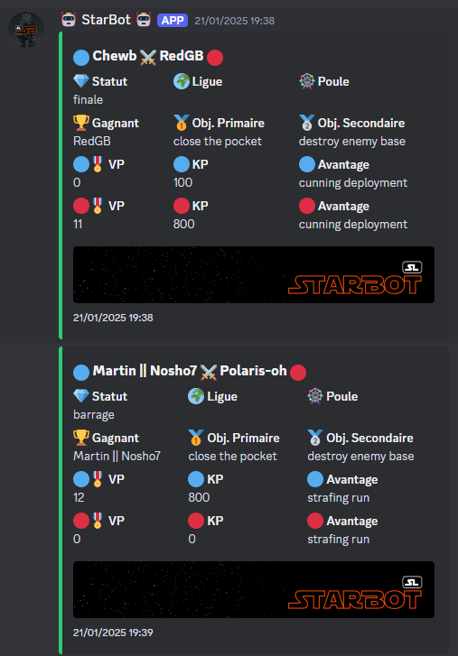
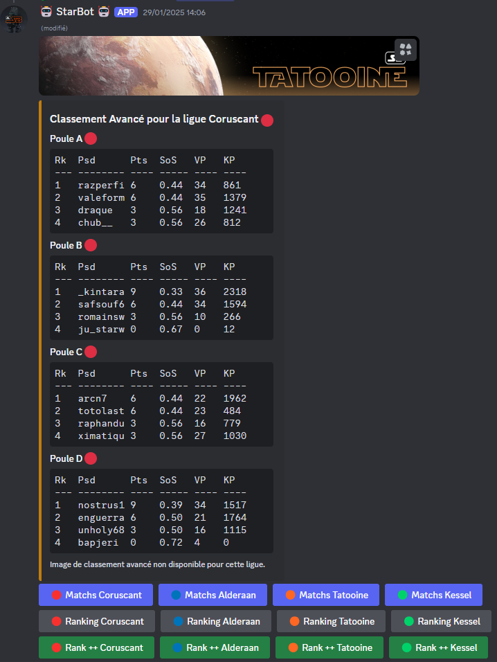
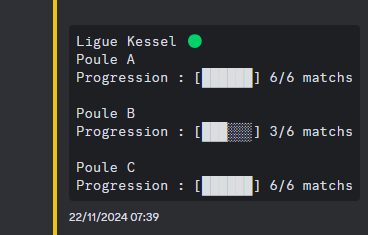

BOT Star league
Résumé du projet
Ce projet consiste à développer un bot Discord, codé en Python, destiné à l'association Star Wars Legion. Le bot a pour mission de gérer les matchs des tournois du jeu de figurines Star Wars Legion en stockant les données dans une base, puis de générer automatiquement des classements, des statistiques et des analyses avancées pour aider la communauté à suivre et à améliorer ses performances.
Structure de la solution
Fonctionnalités principales
- Enregistrement et gestion des matchs : Stockage automatique des résultats de tournois dans une base de données, avec possibilité de modifications.
- Génération de classements et de statistiques : Création de classements en temps réel et analyses détaillées des performances.
- Commandes interactives sur Discord : Interface conviviale permettant aux utilisateurs de consulter les données, lancer des requêtes et obtenir des analyses.
Technologies utilisées
- Python : Logique métier du bot.
- Discord.py : Intégration avec l’API Discord.
- Base de données (PostgreSQL) : Stockage structuré des résultats de match. Utilisation de SupaBase
- Bibliothèques d’analyse (Pandas, NumPy) : Traitement et visualisation des statistiques.
Points forts du projet
- Automatisation et gain de temps : Simplifie la gestion des tournois et l’analyse des performances.
- Engagement de la communauté : Outil interactif renforçant l’intérêt et la participation des membres.
- Analyses avancées : Statistiques détaillées permettant d’identifier tendances et points forts/faibles.
Liens associés
Galerie


